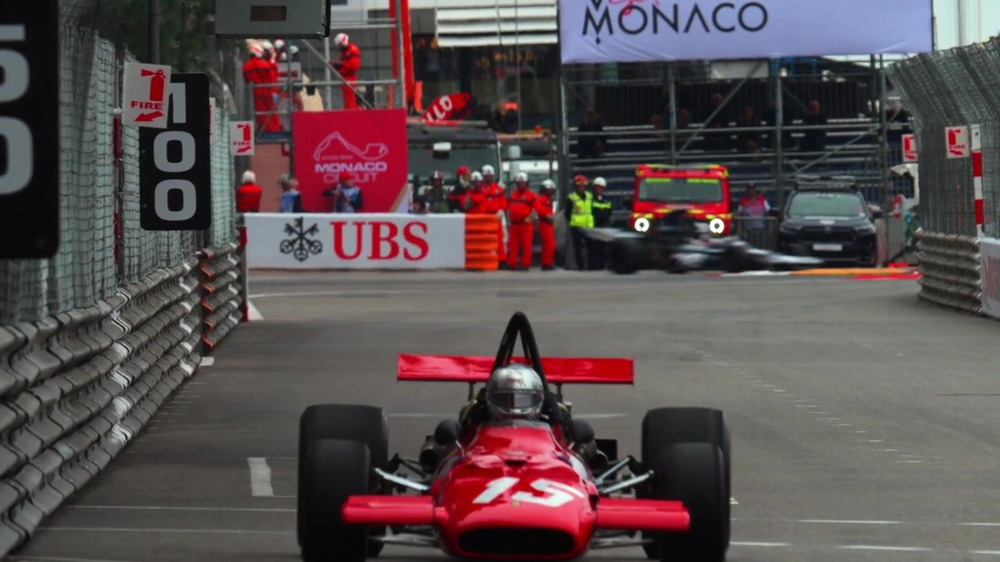
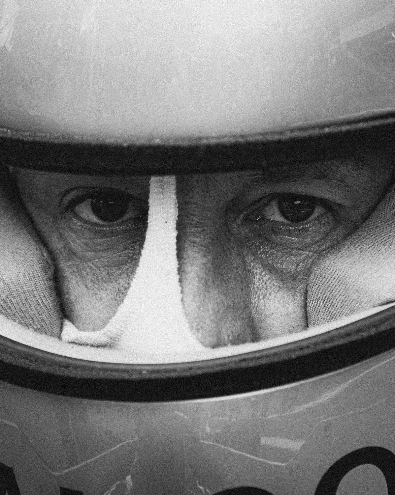
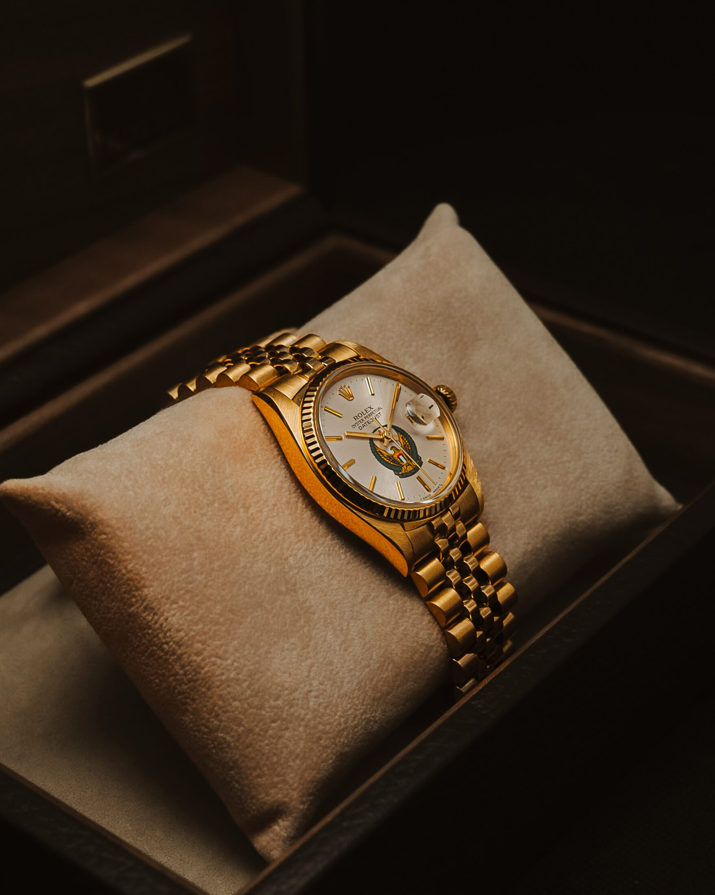
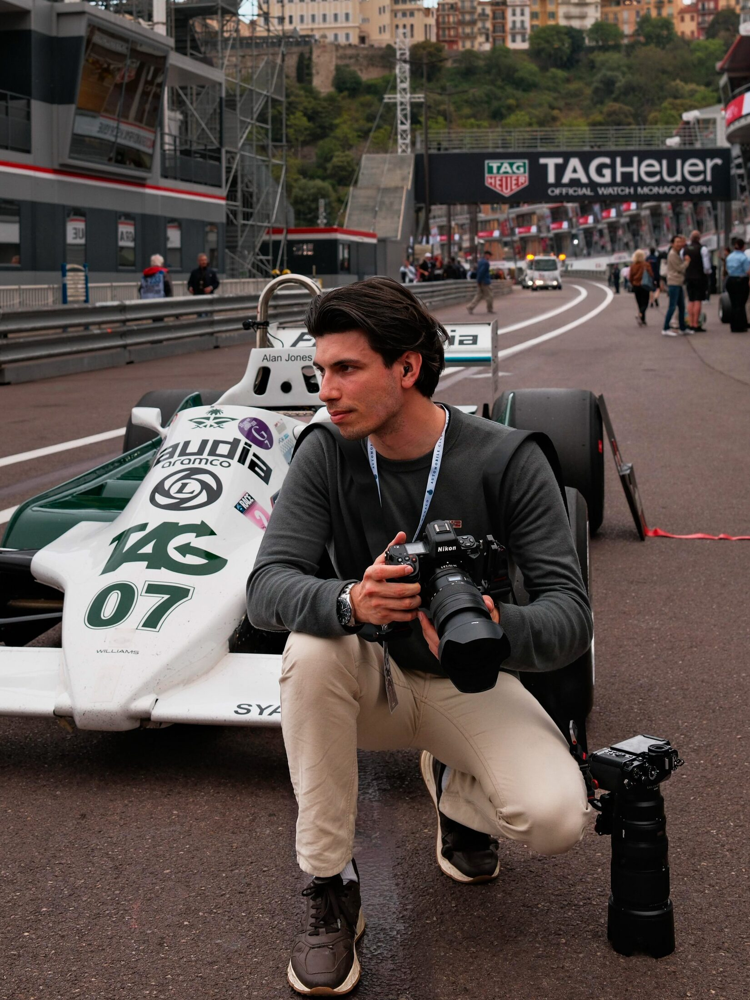

29 — 30 Jan 2027
The I.C.E. St. Moritz
St. Moritz · Switzerland
International Concours of Elegance on the frozen lake — classic and luxury cars in motion against the Engadin peaks. Owner and collector portraits by appointment.
Photo & Film · Motorsport · Luxury · Events
Two honours at the Bruno Boni Photo Contest of the 1000 Miglia, an Honorable Mention at the International Photography Awards and a full photo feature in Classic Driver. In 2026 the Best Black & White image was exhibited for two months at Galleria La Cavallerizza in Brescia.
Editorial photography and film for automotive culture, events, hospitality and luxury details — with the same restraint, timing and atmosphere.

Short films and event reels for motorsport heritage, historic cars and luxury brands, shot with the same editorial eye.
Watch the work →
Driver portraits, Monaco Historique, Gran Premio Storico d'Italia, Mille Miglia, WEC: historic cars and the human dimension beyond the track.
View the chapters →
Portraits, interiors, hospitality, watches and refined details for discreet visual storytelling.
View the work →Historic racing drivers photographed through the helmet opening: eyes, focus and the seconds before the start. A private commission for drivers and owners during your race weekend — a portrait you will actually want to print.
A short documentary for a young driver stepping up from karting to Formula 4, made to present him to potential sponsors. Directed, shot, flown and edited as a one-man crew: slow pacing, few cuts — cinema rather than promo.
Behind the Visor portraits, garage moments and car-and-owner images during your race weekend or concours. Prints and private galleries.
Book a portrait →Historic racing, endurance, concours, hospitality and brand nights: authored images plus clean editorial frames ready for press, sponsors and social.
Check your date →Short films and reels shot alongside the photography — one visit, one eye, stills and motion delivered together. Like Road to F4.
Plan a film →
I am Simone Slawitz, an Italian photographer with an editorial approach and a precise, restrained aesthetic rooted in motorsport heritage. Racing runs in my family: my ancestor Rienzo Slawitz was a driver in 1923.
My work has won the Bruno Boni Photography Competition (2023), the Best B&W Award (2025) and an Honorable Mention at the International Photography Awards (2026).
My story & pressInternational Concours of Elegance on the frozen lake — classic and luxury cars in motion against the Engadin peaks. Owner and collector portraits by appointment.
Now booking the 2027 season: driver portraits, team stories and event coverage at historic races and concours. Send me your dates.
Available for events, brands and editorial collaborations across Italy and Europe. Every story begins with a conversation.